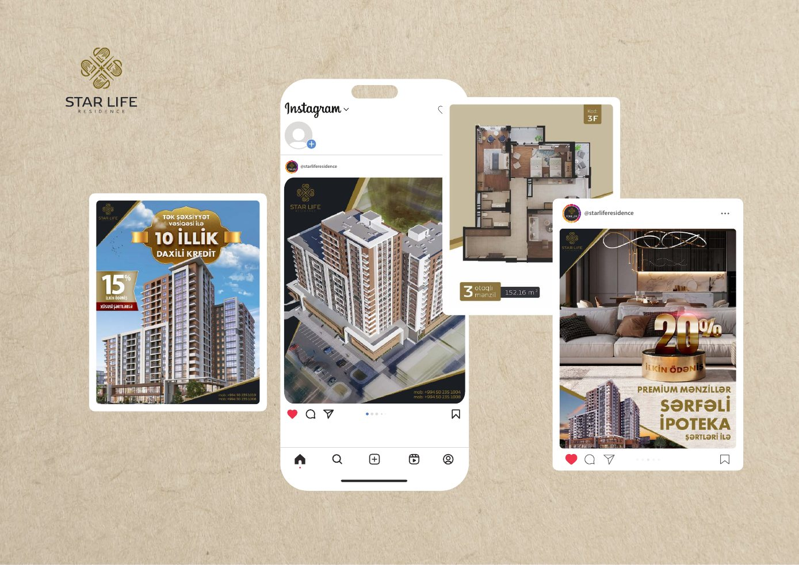

Kontent iyerarxiyası
Başlıq, vizual və əlavə məlumat mobil baxış üçün düzgün prioritetləşdirilir.
Social Media Design
Memarlıq vizuallarını, satış mesajlarını və layihə üstünlüklərini zərif, isti palitrada birləşdirən sosial media sistemi.

01 / Ümumi baxış
Bej fonlar, qızılı aksentlər və geniş boşluqlar yaşayış layihəsinin premium mövqeyini qoruyur, renderlər isə əsas vizual rolunu daşıyır.
Memarlıq vizuallarını, satış mesajlarını və layihə üstünlüklərini zərif, isti palitrada birləşdirən sosial media sistemi.
Şablon sistemi fərqli mövzu, vizual və mesajları eyni profil daxilində ardıcıl göstərir, eyni zamanda kampaniyalar üçün kifayət qədər yaradıcı çeviklik saxlayır.
02 / Yanaşma
Başlıq, vizual və əlavə məlumat mobil baxış üçün düzgün prioritetləşdirilir.
Təkrarlanan grid sürətli istehsal və brend ardıcıllığı yaradır.
Eyni sistem daxilində foto, 3D, məhsul və məlumat formatları işləyir.
03 / Visual Direction
04 / Design System
Paylaşımlar arasında görünən ritm və ardıcıllıq.
Mövzuya görə dəyişən, brendə görə sabit quruluş.
Kiçik ekranda aydın başlıq və əsas vizual.
05 / Növbəti
Növbəti layihəGreenville↗